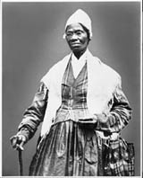
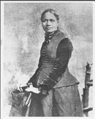

This is an archived copy of History Matters, provided by the Roy Rosenzweig Center for History and New Media. To explore this content in a new interface, visit Who Built America?.

|
Scholars In Action presents case studies that demonstrate how scholars interpret different kinds of historical evidence. These two speeches, one by Sojourner Truth (1852) and one by Frances Watkins Harper (1857) reveal the ways that African-American women presented their cause and themselves. For many reform-minded men and women in the nineteenth century, the movement to abolish slavery was the most important cause in American society. Radical abolitionists who sought to create a democratic and egalitarian movement allowed women and African Americans to have unprecedented influence and public roles. Some women within the abolitionist movement noted the links between the plight of slaves and the plight of women and thus became active in some of the first women's rights organizations. Sojourner Truth (born Isabella Baumfree) was enslaved for thirty years prior to the abolition of slavery in New York. Once free, she was guided by spiritual revelation to change her name and become a preacher and an active abolitionist. Born to free blacks in Maryland, Frances Watkins Harper was a poet and a teacher who became active in the abolitionist struggle in the 1850s. Before you move to the next page, read the speeches by Harper and Truth. How do the women present the issue of slavery? How do they present their arguments against slavery? What do their language and use of metaphors reveal? Who would you assume their audience to be? Are there points in these speeches that are confusing or unclear? Published online February 2003. Cite as: Carla Peterson, "Analyzing Abolitionist Speeches," History Matters: The U.S. Survey Course on the Web, http://historymatters.gmu.edu/mse/sia/speeches.htm, February 2003. |
||
|  Sojourner Truth: "Children, I talks to God and God talks to me . . ." [read speech excerpt]
 Frances Watkins Harper: "But a few months since, a man escaped from bondage and found a temporary shelter . . ." [read speech excerpt ] |
||